JavaScript... it's everywhere!
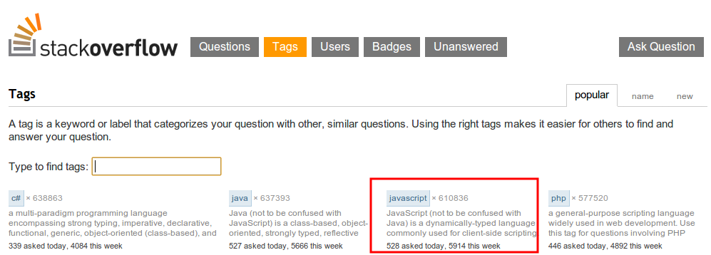
JavaScript... it's everywhere!
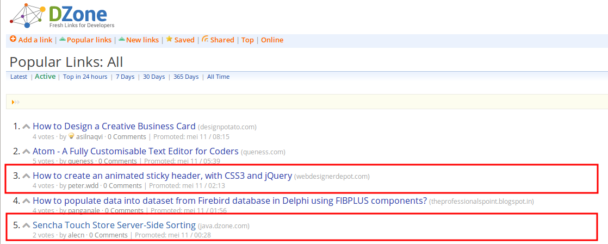
JavaScript... it's everywhere!
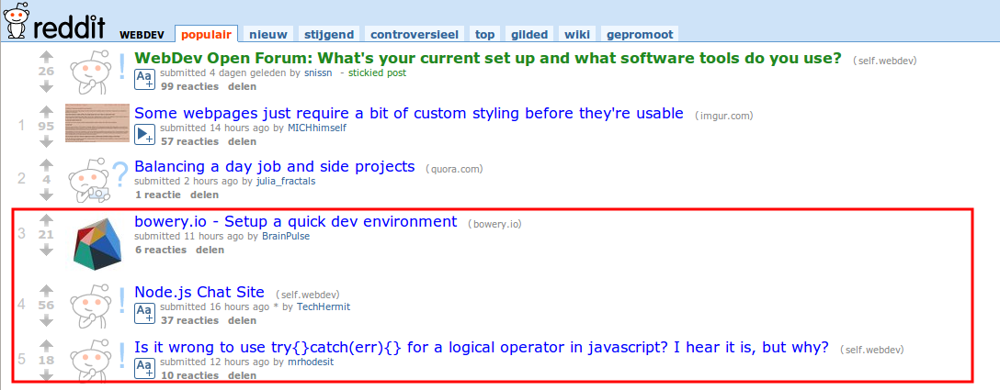
JavaScript... it's everywhere!
- Dzone, Reddit, StackOverflow, ...
- JavaScript is populair
- Dagelijks nieuwe frameworks en libraries
Is it that good?
- Grote vooruitgang laatste decennium
- HTML5
- Explosieve groei van frameworks and libraries
- Application lifecycle tools (mede dankzij Node.js)
HTML5
Nieuwe elementen
Local storage
Local database
Geolocation
Video API
Audio API
Canvas
WebGL
File API
WebSockets
CSS3
Application lifecycle
-
- Yo
- Grunt
- Bower
- Component
- PhantomJS
- Karma
- QUnit
- Jasmine
- The intern
- ...
-
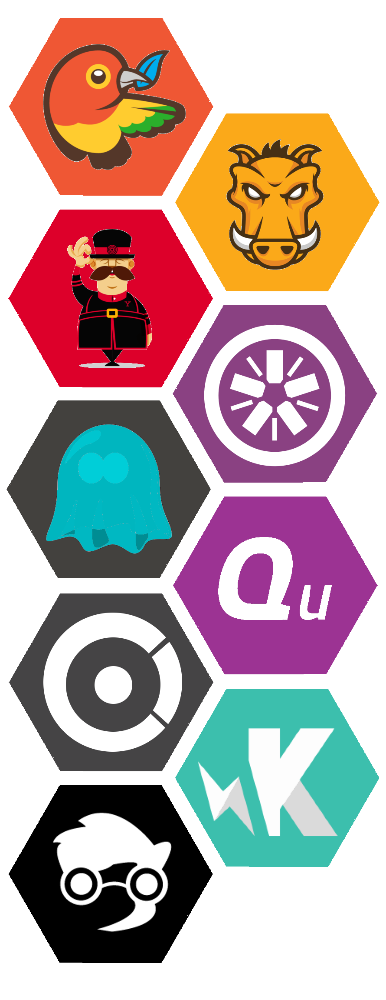
The "developer" improved
- Meer developers zijn op de hoogte van de DO en de DON'T's
- Vergelijken met "===" en "!=="
- Global namespace vermijden
- Gebruik van closures
- ...
Wat met de rest van de wereld
Microsoft
- Silverlight?
- Node.js voor Windows Server
- Internet Explorer & HTML5 support
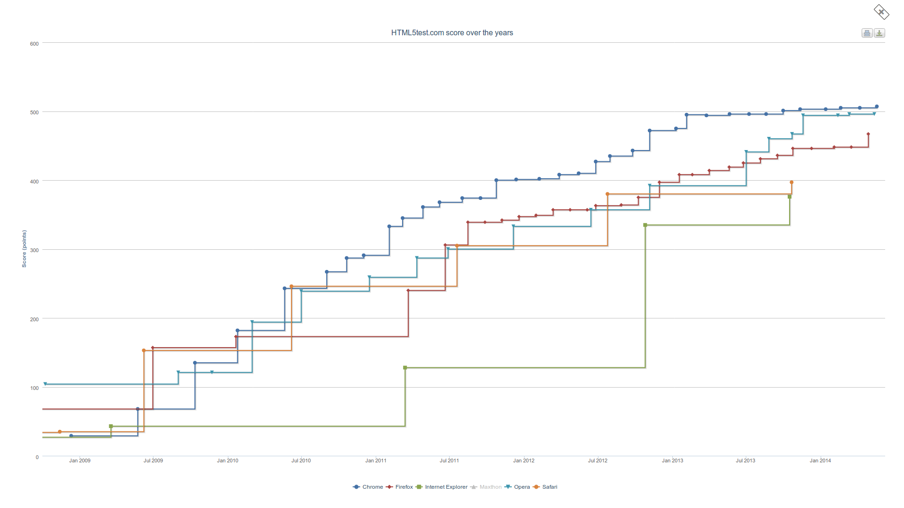
Adobe
- Flash voor Linux + Android?
- Acquires Phonegap, platform voor mobile apps met HTML5 + CSS + JS
Java
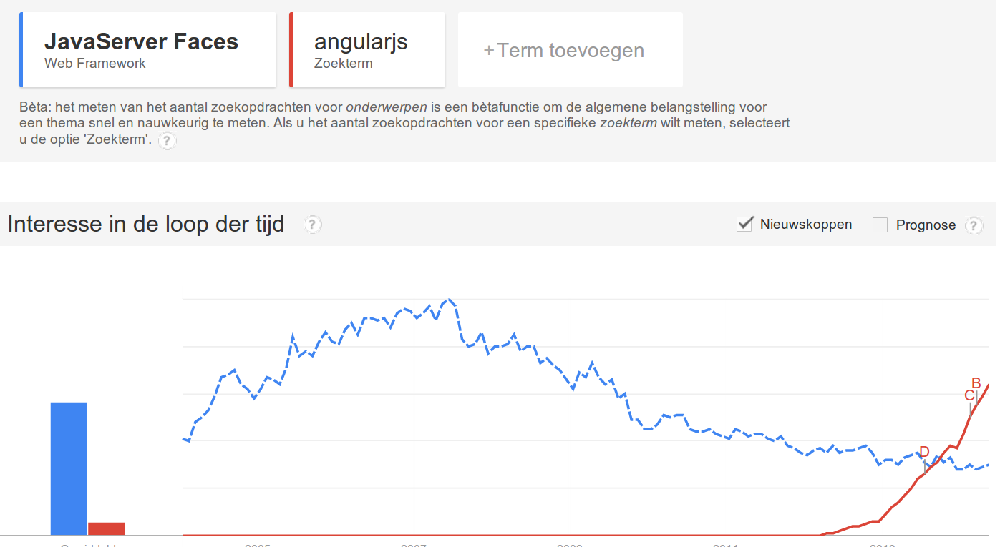
JSF vs AngularJS
Google
-
- Google Web Toolkit?
- Enorm veel succes met AngularJS
- Dart
-
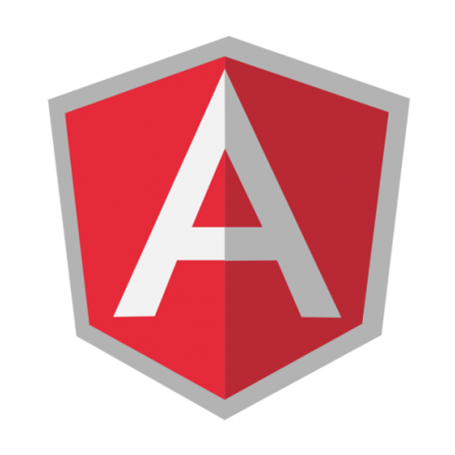
IBM
- Lanceert cloud platform BlueMix met support voor Node.js + MongoDB
- Ontwikkelt Node-red, een Node.js variant voor Apache Camel
- Acquires Worklight, platform voor mobile apps met HTML5 + CSS + JS
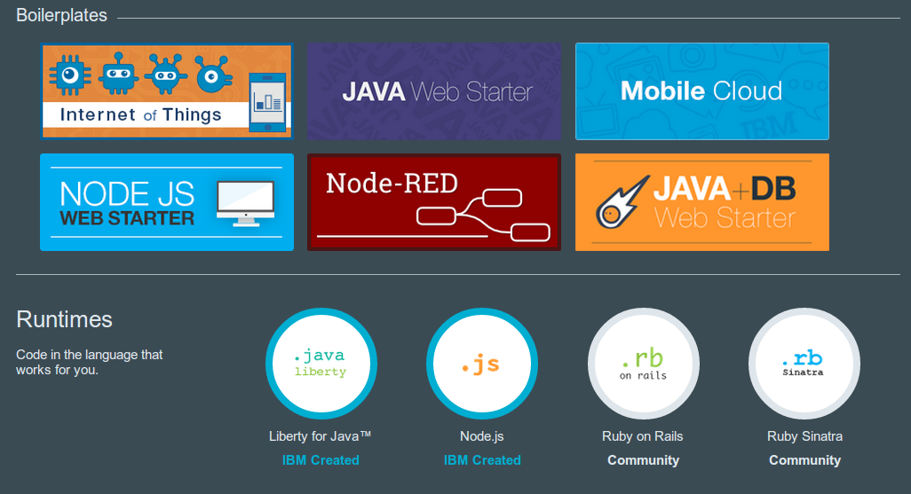
Mozilla
- Research projecten zoals asm.js, Parallel JavaScript, ...
- Samenwerking met Epic: Unreal engine in browser
- Webmaker: Tutorials voor het maken van toepassingen op het web
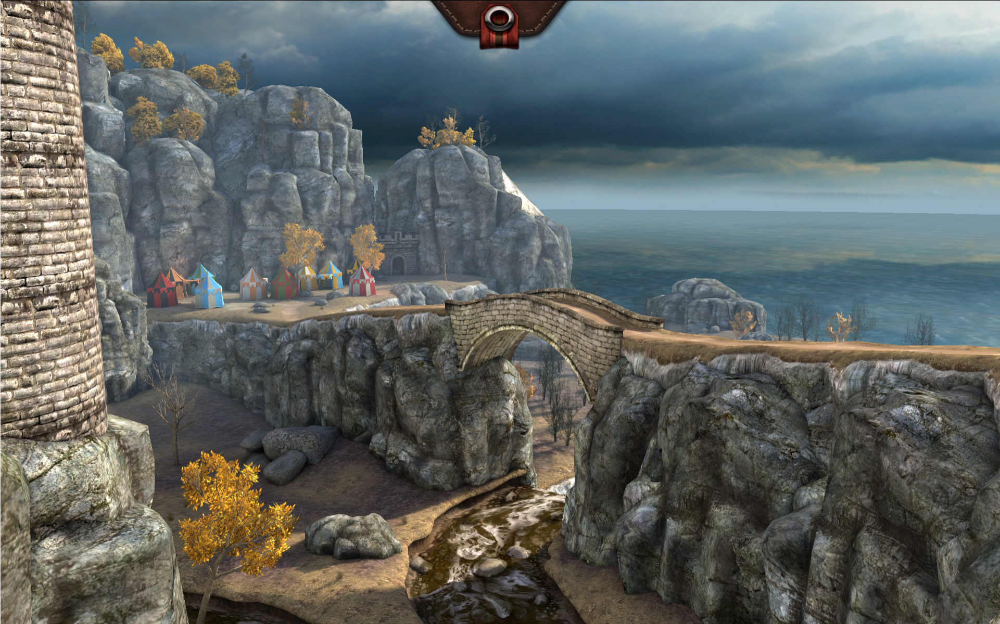
JFrog
- Gekend van Artifactory
- Nu ook voor Node.js packages
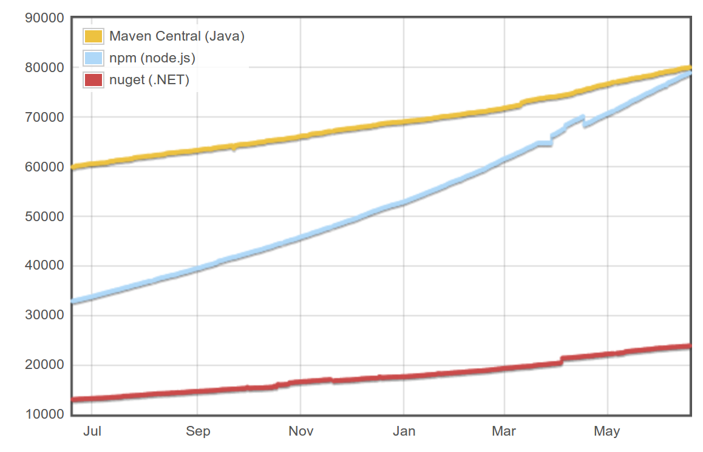
Andere
-
eBay - ql.io
-
Paypal - KrakenJS
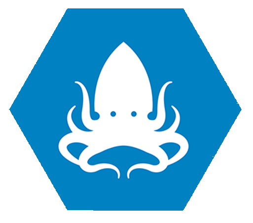
How do we do it?
3 stappen
-
1.
RESTify your data
-
2.
Front-end herwerken
-
3.
Application lifecycle uitbreiden
RESTify your data
-
- Business data via web services
- JSON of XML?
- Multi-channel approach (mobile?)
- Eenvoudige integratie met frameworks
-
Front-end herwerken
- Monoliet JS bestanden
- Hoe koppeling logica + HTML vermijden
- Structuur
- Testability
- Zijn daar design patterns voor?
- Model, View, Controller
- HTML = view
- Logica = controller
Uitbreiden van application lifecycle
-
- Dependency management
- Minification + compressing
- Unit testing
- Steeds meer tooling dankzij Node.js
- Yeoman
- Yo: Project scaffolding
- Grunt: Task runner
- Bower: dependency management
- Kunnen afzonderlijk geïnstalleerd worden
-
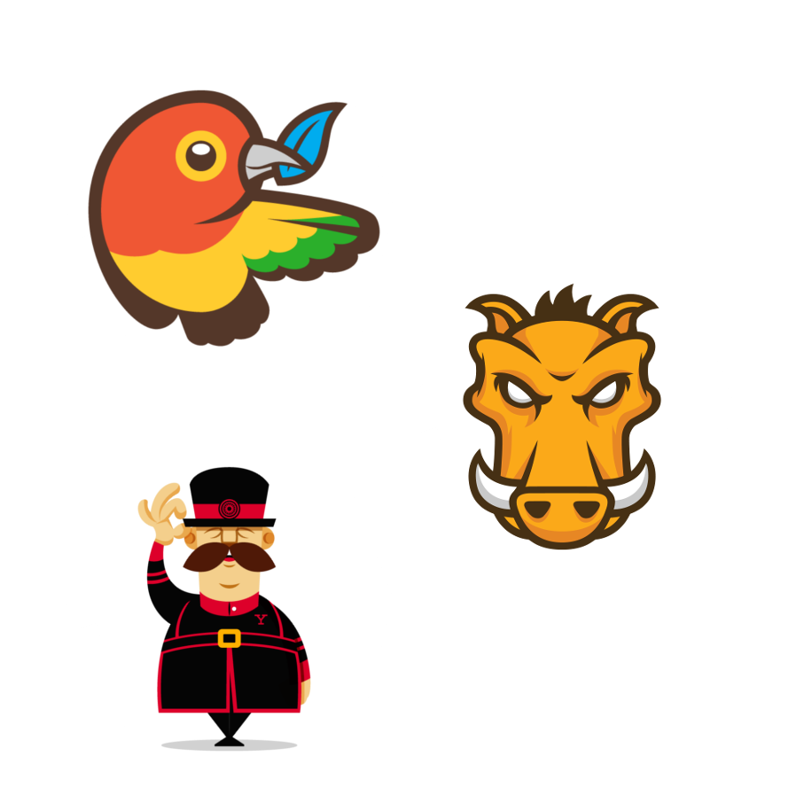
Uitbreiden van application lifecycle
Test, 1, 2, 3...
-
- Test je JavaScript code
- JavaScript testing frameworks:
- KarmaJS test runner
- Grunt plugin
- Reporters
- Browser
- PhantomJS: Headless testen
-
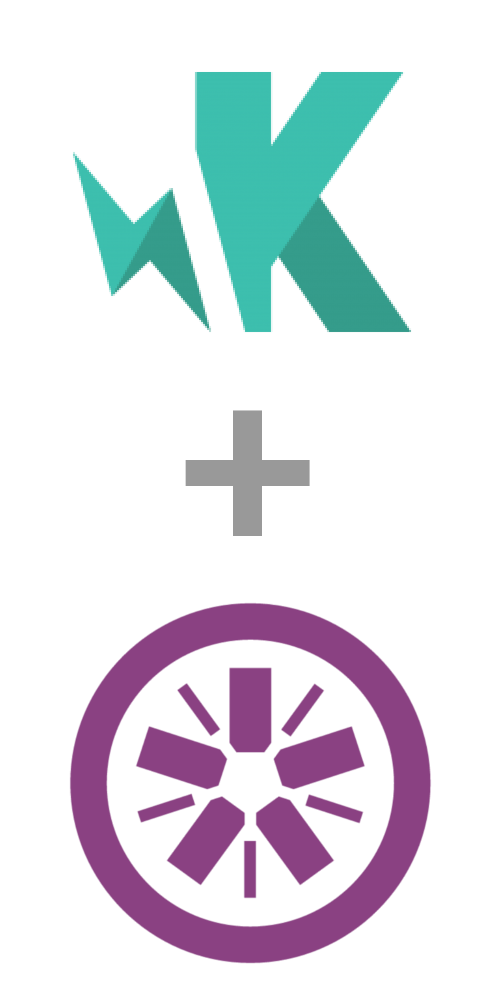
Uitbreiden van application lifecycle
Voorbeeld lifecycle
- Start project: Project scaffolding met Yo
- Development project:
- Dependency management met Bower
- Versionering van dependencies
- Code quality + test coverage met Grunt
- Deployment project: Deployment in cloud met Grunt
- Continuous integration: Met Jenkins (of Travis CI)
- Versioning: Git
- Project kan herbruikt worden in andere projecten
- Tagging releases: Bower dependency versies
Toekomst
- Met deze drie stappen ben je klaar voor de toekomst
- Node.js? Back-end aanpassen
- Mobile? Nieuwe app op basis van business services
Toekomst
Get MEAN
-
- Full JavaScript stack
- MongoDB: NoSQL database (JSON/BSON documenten)
- Express: Web framework voor Node.js
- AngularJS: Client-side MVC framework
- Node.js: JavaScript platform
- Ook andere stacks bestaan:
-
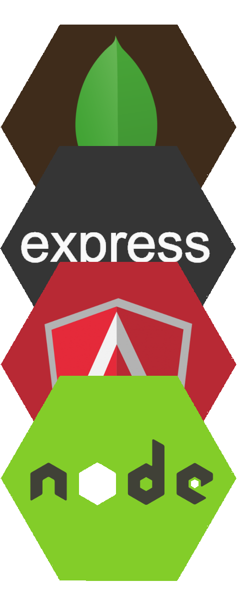
Demo
Application lifecycle: Maven & Grunt
JavaScript in Industry
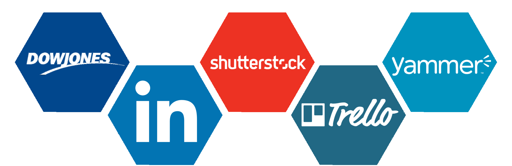
The end
Questions?
Nu allemaal snel de uitslag van #COLCIV #WK2014 checken
{kind=link}